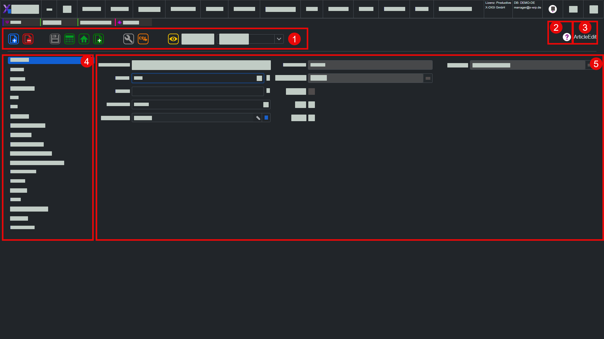

EditView
Einordnung
X-ERP Hilfe > Grundlagen > EditView
Die EditView ist die Bearbeitungsansicht eines einzelnen Datensatzes in X-ERP. Sie wird geöffnet, wenn ein neuer Datensatz angelegt oder ein bestehender Datensatz aus einer ListView heraus bearbeitet wird. In der EditView werden die fachlichen Daten geprüft, ergänzt, gespeichert und bei Bedarf in mehrere Register aufgeteilt.

1) EditView-Toolbar
Die EditView-Toolbar enthält die wichtigsten Aktionen für den aktuellen Datensatz. Dazu gehören typischerweise Neu, Abbrechen, Speichern, Speichern und Schließen, Löschen, Aktualisieren sowie weitere kontextabhängige Befehle. Welche Schaltflächen sichtbar sind, hängt von Ansicht, Berechtigung und Bearbeitungsstatus ab.
2) Online-Hilfe zur aktuellen EditView
Die Online-Hilfe öffnet die passende Hilfeseite zur aktuell geöffneten EditView. Sie beschreibt den Zweck der Ansicht, die Register, die wichtigsten Eingabefelder und die verfügbaren Aktionen. Dadurch kann der Anwender direkt aus dem Arbeitskontext heraus nachlesen, was in dieser Ansicht gepflegt wird.
3) Name der aktuellen EditView
Der Name der aktuellen EditView zeigt, welche Bearbeitungsansicht gerade geöffnet ist. Das ist besonders hilfreich, wenn mehrere Ansichten ähnlich aussehen oder aus unterschiedlichen Modulen heraus geöffnet werden. In der Hilfe bleibt der technische Originalname erhalten, damit Bildschirm, URL und Dokumentation eindeutig zusammenpassen.
4) Register-Tabs
Register-Tabs gliedern umfangreiche Datensätze in fachliche Bereiche. Ein Artikel, Partner oder Auftrag kann dadurch Stammdaten, Texte, Preise, Bilder, Anhänge oder weitere Zusatzbereiche übersichtlich getrennt anzeigen. Je nach Datensatz, Berechtigung oder Einstellung können einzelne Register sichtbar oder ausgeblendet sein.
5) Eingabefelder
Eingabefelder enthalten die eigentlichen Daten des Datensatzes. Pflichtfelder, eindeutige Felder, Nachschlagefelder, Auswahlfelder, Datumsfelder, Zahlenfelder und Textbereiche folgen jeweils eigenen Regeln. X-ERP prüft Eingaben beim Bearbeiten und Speichern, damit Daten vollständig, eindeutig und fachlich verwertbar bleiben.
6) Eingabe-Tipps
In der EditView helfen Tastaturkürzel und automatische Speicherlogik beim schnellen Arbeiten:
- Numpad-Enter speichert den aktuellen Datensatz, wenn der Speichern-Button sichtbar, aktiv und nicht beschäftigt ist.
- Numpad-Plus zweimal schnell hintereinander legt einen neuen Datensatz an.
- Escape bricht die Bearbeitung ab oder verwirft ungespeicherte Eingaben.
- Einige Kürzel sind deaktiviert, solange ein Popup, ein Dropdown, eine Grid-Bearbeitungszelle oder ein Dialog geöffnet ist.
- In mehrzeiligen Textfeldern wird Numpad-Enter nicht als Speichern-Kürzel verwendet, damit Texteingaben nicht versehentlich gespeichert werden.
- Einige Eingabefelder speichern automatisch, sobald das Feld verlassen wird. In diesem Fall wird das Speicher-Icon der EditView nicht grün.